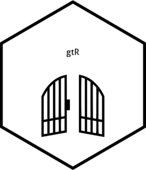
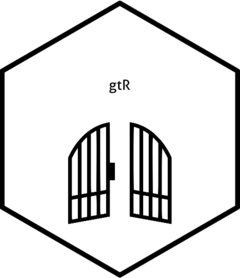

gtR is a tool for accessing UK Research and Innovation’s (UKRI) Gateway to Research (GtR) API. It is designed to reduce repetitive code when calling the API via R. This also helps eliminates barriers to users who aren’t familiar with APIs more generally.
Installation
You can install the package from GitHub using the following code:
remotes::install_github("shanej90/gtR")Example
This is a basic example which shows you how to solve a common problem (results aren’t shown due to long character strings in data):
library(gtR)
# get list of projects
data <- get_resources(
resource = "project",
size = 10,
page_num = 1
)Enhancements
Although the intention to expand this package’s functionality over time, if you can’t wait feel free to fork and add functionality. In this case you may find UKRI’s API documentation useful.
Logo credit
Gate icon made from Icon Fonts. Licensed by CC BY 3.0.